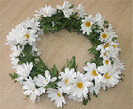

Behind the name of “Ivančice” there are many diligent members of children folklore and tamburitza (Croatian folklore instrument) ensemble, the only one of that kind in Kutina. It has been established on September 15th 1995. It cherishes the beauty of children’s creativity through a song and a child play, and those members that are older present the wealth of cultural inheritance of Moslavina, Slavonia, Posavina, Međimurje and Podravina (Croatian regions) by singing and dancing throughout our homeland.
Children at the age of 4 come to “Ivančice” ensemble in order to get to know traditional children plays from Moslavina and other neighboring regions and through different joyful games they start to learn their first dancing steps with the other children their age or older and all of that under the guidance of professionals (there are 5 trained professionals for children folklore in “Ivančice”).
The name of “Ivančice” comes from the celebration of summer festive Ivanje (Ivan is Croatian version of an English name John) on 24th of June, called Kupalo or Kupadlo. In Slavic tradition Kupadlo was the god of earth crops and harvest. On that day certain people and animals bathed in order to avoid all the possible evil. Nowadays the custom has completely lost the meaning it once had and it is kept only in memory of taletellers and some folklore singers. It is worth to mention that “Ivančice” played an important role in preservation from oblivion of Procession on Ivanje as well as of giving of the presents to St. Nicolas that was held for the first time in 1995 and since then it has become a tradition, not only in Kutina but also in the region. Today there are more than 100 members of “Ivančice” and they are sorted out in groups according to their age. In the last 5 years they had 107 performances.
Part from folklore festivals in Kutina, Nova Gradiška, Šandrovac and Siče, significant performances were done in Zagreb, Slavonski Brod, Vinkovci (famous Croatian folklore festival called “The autumns of Vinkovci”) and international folklore festival in Zagreb, Romania, Italia, Portugal, Makedonia, Hungaria and Slovenia. “Ivančice” are the only children ensemble in Moslavina that keeps renewing playing on traditional music instruments: bagpipes, ocarinas, whistles, flutes, double flutes and solo tamburitzas.
KUD „IVANČICE“ is the organizer of the Child Folklor Festival Croatia. KUD "Ivančice" have won 4 medals so far (2 gold, 1 silver and 1 bronce)